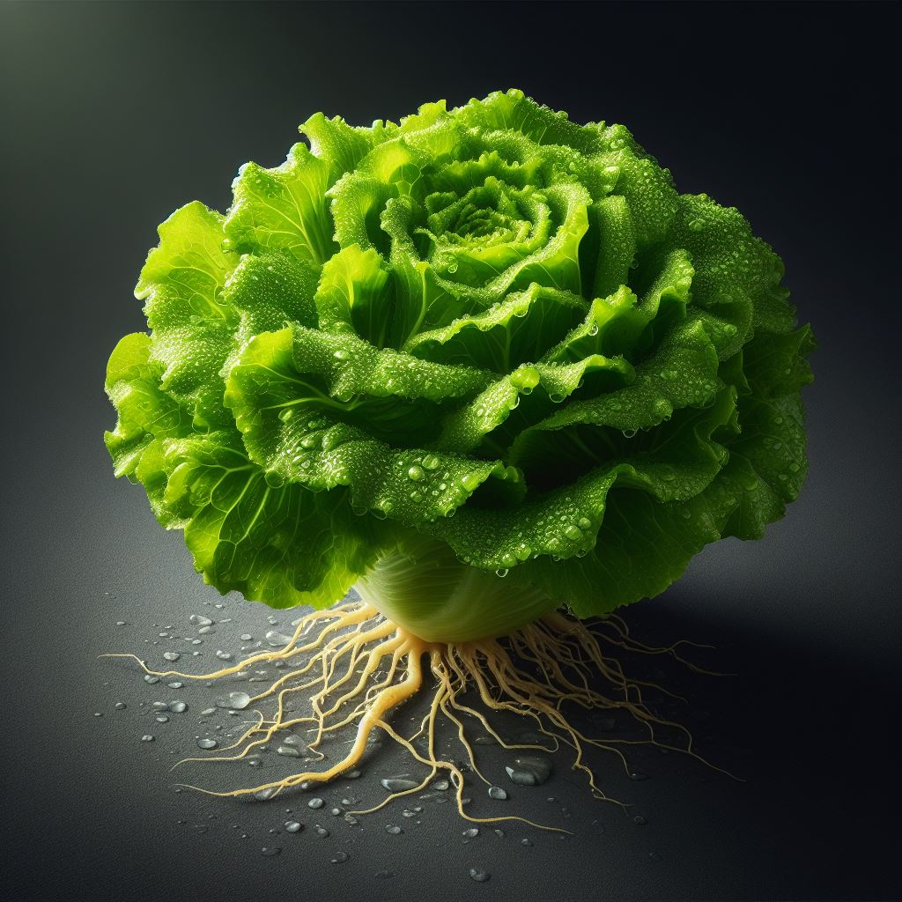

Alho
O alho é um ingrediente aromático e saboroso amplamente utilizado na culinária de várias culturas ao redor do mundo. Além de seu sabor distintivo, o alho também é conhecido por suas propriedades medicinais.
Plantando Alho:
- Escolha um local com solo bem drenado e enriquecido com matéria orgânica para plantar o alho.
- Plante os dentes de alho a uma profundidade de cerca de 2 a 5 centímetros no solo, com a ponta voltada para cima.
- Mantenha um espaçamento de aproximadamente 10 a 15 centímetros entre os dentes de alho para permitir um bom desenvolvimento das plantas.
Cultivando Alho:
- Mantenha o solo levemente úmido, regando regularmente, mas evitando encharcar.
- Fornecer adubação orgânica rica em potássio durante o crescimento ativo do alho para promover a formação de bulbos saudáveis.
- Monitore as plantas quanto a pragas e doenças, e tome medidas preventivas, se necessário, utilizando métodos orgânicos de controle de pragas.
Colhendo Alho:
- O alho pode ser colhido quando as folhas começarem a amarelar e secar, geralmente após 6 a 9 meses do plantio.
- Use uma pá ou garfo de jardim para desenterrar os bulbos de alho do solo, tendo cuidado para não danificar as cabeças durante a colheita.
- Após a colheita, deixe os bulbos de alho secarem em local fresco e arejado por algumas semanas antes de armazenar.